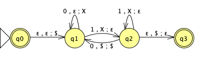

Due: 4/28/22 at 5pm (no penalty late submission until 8am next morning), via Gradescope
In this assignment,
You will practice distinguishing between regular and nonregular languages using both closure arguments and the pumping lemma. You will also practice with the definition of pushdown automata.
Resources: To review the topics you are working with for this assignment, see the class material from Week 2 through Week 4. We will post frequently asked questions and our answers to them in a pinned Piazza post.
Reading and extra practice problems: Sipser Section 1.4, 2.2. Chapter 1 exercises 1.29, 1.30. Chapter 1 problems 1.49, 1.50, 1.51. Chapter 2 exercises 2.5, 2.7.
Key Concepts: Pumping lemma, pumping length, regular languages, nonregular languages, pushdown automata, stack.
For all HW assignments:
Weekly homework may be done individually or in groups of up to 3 students. You may switch HW partners for different HW assignments. The lowest HW score will not be included in your overall HW average. Please ensure your name(s) and PID(s) are clearly visible on the first page of your homework submission and then upload the PDF to Gradescope. If working in a group, submit only one submission per group: one partner uploads the submission through their Gradescope account and then adds the other group member(s) to the Gradescope submission by selecting their name(s) in the “Add Group Members" dialog box. You will need to re-add your group member(s) every time you resubmit a new version of your assignment. Each homework question will be graded either for correctness (including clear and precise explanations and justifications of all answers) or fair effort completeness. You may only collaborate on HW with CSE 105 students in your group; if your group has questions about a HW problem, you may ask in drop-in help hours or post a private post (visible only to the Instructors) on Piazza.
All submitted homework for this class must be typed. You can use a word processing editor if you like (Microsoft Word, Open Office, Notepad, Vim, Google Docs, etc.) but you might find it useful to take this opportunity to learn LaTeX. LaTeX is a markup language used widely in computer science and mathematics. The homework assignments are typed using LaTeX and you can use the source files as templates for typesetting your solutions. To generate state diagrams of machines, we recommend using Flap.js or JFLAP. Photographs of clearly hand-drawn diagrams may also be used. We recommend that you submit early drafts to Gradescope so that in case of any technical difficulties, at least some of your work is present. You may update your submission as many times as you’d like up to the deadline.
Integrity reminders
Problems should be solved together, not divided up between the partners. The homework is designed to give you practice with the main concepts and techniques of the course, while getting to know and learn from your classmates.
You may not collaborate on homework with anyone other than your group members. You may ask questions about the homework in office hours (of the instructor, TAs, and/or tutors) and on Piazza (as private notes viewable only to the Instructors). You cannot use any online resources about the course content other than the class material from this quarter – this is primarily to ensure that we all use consistent notation and definitions we will use this quarter and also to protect the learning experience you will have when the ‘aha’ moments of solving the problem authentically happen.
Do not share written solutions or partial solutions for homework with other students in the class who are not in your group. Doing so would dilute their learning experience and detract from their success in the class.
You will submit this assignment via Gradescope (https://www.gradescope.com) in the assignment called “HW3CSE105Sp22”.
Assigned questions
(Graded for fair effort completeness1) Do the following for each of the following attempted “proofs" that a set is nonregular:
Find the (first and/or most significant) logical error in the “proof" and describe why it’s wrong.
Either prove that the set is actually regular (by finding a regular expression that describes it or a DFA/NFA that recognizes it, and justifying why) or fix the proof so that it is logically sound.
The language \(X_1 = \{ uw \mid \text{$u$ and $w$ are strings over $\{0,1\}$ and have the same length} \}\).
“Proof" that \(X_1\) is not regular using the Pumping Lemma: Let \(p\) be an arbitrary positive integer. We will show that \(p\) is not a pumping length for \(X_1\).
Choose \(s\) to be the string \(1^p 0^p\), which is in \(X_1\) because we can choose \(u = 1^p\) and \(w = 0^p\) which each have length \(p\). Since \(s\) is in \(X_1\) and has length greater than or equal to \(p\), if \(p\) were to be a pumping length for \(X_1\), \(s\) ought to be pump’able. That is, there should be a way of dividing \(s\) into parts \(x,y,z\) where \(s=xyz\), \(|y| >0\), \(|xy| \leq p\), and for each \(i \geq 0\), \(xy^iz \in X_1\). Suppose \(x,y,z\) are such that \(s = xyz\), \(|y| > 0\) and \(|xy| \leq p\). Since the first \(p\) letters of \(s\) are all \(1\) and \(|xy| \leq p\), we know that \(x\) and \(y\) are made up of all \(1\)s. If we let \(i=2\), we get a string \(xy^iz\) that is not in \(X_1\) because repeating \(y\) twice adds \(1\)s to \(u\) but not to \(w\), and strings in \(X_1\) are required to have \(u\) and \(w\) be the same length. Thus, \(s\) is not pumpable (even though it should have been if \(p\) were to be a pumping length) and so \(p\) is not a pumping length for \(X_1\). Since \(p\) was arbitrary, we have demonstrated that \(X_1\) has no pumping length. By the Pumping Lemma, this implies that \(X_1\) is nonregular.
The language \(X_2 = \{ u0w \mid \text{$u$ and $w$ are strings over $\{0,1\}$ and have the same length} \}\).
“Proof" that \(X_2\) is not regular using the Pumping Lemma: Let \(p\) be an arbitrary positive integer. We will show that \(p\) is not a pumping length for \(X_2\).
Choose \(s\) to be the string \(1^{p} 0^{p+1}\), which is in \(X_2\) because we can choose \(u = 1^p\) and \(w = 0^p\) which each have length \(p\). Since \(s\) is in \(X_2\) and has length greater than or equal to \(p\), if \(p\) were to be a pumping length for \(X_2\), \(s\) ought to be pump’able. That is, there should be a way of dividing \(s\) into parts \(x,y,z\) where \(s=xyz\), \(|y| >0\), \(|xy| \leq p\), and for each \(i \geq 0\), \(xy^iz \in X_2\). When \(x = \varepsilon\) and \(y = 1^{p}\) and \(z = 0^{p+1}\), we have satisfied that \(s = xyz\), \(|y| > 0\) (because \(p\) is positive) and \(|xy| \leq p\). If we let \(i=2\), we get the string \(xy^iz = 1^{2p}0^{p+1}\) that is not in \(X_2\) because its middle symbol is a \(1\), not a \(0\). Thus, \(s\) is not pumpable (even though it should have been if \(p\) were to be a pumping length) and so \(p\) is not a pumping length for \(X_2\). Since \(p\) was arbitrary, we have demonstrated that \(X_2\) has no pumping length. By the Pumping Lemma, this implies that \(X_2\) is nonregular.
(Graded for correctness2) Give an example of a language over the alphabet \(\{a,b,c\}\) that has cardinality \(2\) and for which \(4\) is a pumping length and \(3\) is not a pumping length. A complete solution will give a clear and precise description of the language, a justification for why \(4\) is a pumping length, and a justification for why \(3\) is not a pumping length.
(Graded for fair effort completeness) Prove or disprove each of the following statements. (In other words, decide whether each statement is true or false and justify your decision.) Fix \(\Sigma\) an arbitrary (but unknown) alphabet.
If a language \(L\) over \(\Sigma\) is nonregular then its complement \(\overline{L}\) is regular.
Each nonregular language over \(\Sigma\) is infinite.
For each \(w \in \Sigma^*\), there is a regular language \(L_{w}\) such that \(w \in L_{w}\).
For each \(w \in \Sigma^*\), there is a nonregular language \(L_{w}\) such that \(w \in L_{w}\).
If a language over \(\Sigma\) is recognized by a PDA then it is nonregular.
(Graded for correctness) In the first week’s homework, we saw the definitions of two functions on the set of languages over \(\{0,1\}\): for \(L\) a set of strings over the alphabet \(\{0,1\}\), we can define the following associated sets \[LZ(L) = \{ 0^k w \mid w \in L, k \in \mathbb{Z}, k \geq 0 \}\] \[TZ(L) = \{ w 0^k \mid w \in L, k \in \mathbb{Z}, k \geq 0 \}\] This week we’ll just focus on \(LZ(L)\). In class and in the reading so far, we’ve seen the following examples of nonregular languages:
3
\(\{ 0^n 1^n ~|~ n \geq 0 \}\) \[\{ 0^n 1^n ~|~ n \geq 2 \}\] \[\{ 0^n 1^m ~|~ 0 \leq n \leq m \}\] \[\{ 0^n 1^m ~|~ 0 \leq m \leq n \}\] \[\{ 0^n 1^{2n} ~|~ 0 \leq n \}\] \[\{ 0^n 1^{n+1} ~|~ 0 \leq n \}\] \[\{ 1^{n^2} ~|~ 0 \leq n \}\] \[\{ 0^n 1^m 0^n ~|~n,m \geq 0\}\] \[\{ w \in \{0,1\}^* ~|~w = w^R\}\] \[\{ w w^R ~|~ w \in \{0,1\}^*\}\]
Use (some of) the sets above, along with any regular sets you would like, to prove or disprove the statement: “The class of nonregular languages is closed under the function \(LZ\).”
A complete solution will include a precise description of whether the statement is true or false, referring back to the definition of closure, the definition of the function \(LZ\), and the definition of nonregularity. You may use any claims we proved in class or that are proved in the textbook reading, so long as you reference them clearly in your argument by referring to a specific page in the notes, timestamp of a video, or page in the book.
Bonus; not for credit: extend this homework problem for \(TZ(L)\) as well.
Consider the PDA with input alphabet \(\Sigma = \{ 0, 1\}\) and stack alphabet \(\Gamma = \{\$, X\}\) and the following state diagram

(Graded for correctness) Specify an example string \(w_1\) over \(\Sigma\) that is accepted by this PDA, or explain why there is no such example. A complete solution will include either (1) a precise and clear description of your example string and a precise and clear description of the accepting computation of the PDA on this string (potentially using diagrams like those we used in class when tracing PDA computations) or (2) a sufficiently general and correct argument why there is no such example, referring back to the relevant definitions.
(Graded for correctness) Specify an example string \(w_2\) over \(\Sigma\) that is not accepted by this PDA, or explain why there is no such example. A complete solution will include either (1) a precise and clear description of your example string and a precise and clear description of all possible computations of the PDA on this string (potentially using diagrams like those we used in class when tracing PDA computations) to show that none of them are accepting or (2) a sufficiently general and correct argument why there is no such example, referring back to the relevant definitions.
(Graded for completeness) Is the language recognized by this PDA regular or nonregular? You might find it useful to first write out this language in set notation.
(Graded for completeness) Modify the set of accept states of this state diagram to get a different PDA (with the same set of states, input alphabet, stack alphabet, start state, and transition function) that recognizes an infinite regular language, if possible. A complete solution will include either (1) the diagram of this new PDA and an explanation of why the language it recognizes is both infinite and regular, or (2) a sufficiently general and correct argument for why there is no way to choose the set of accept states to satisfy this requirement.
This means you will get full credit so long as your submission demonstrates honest effort to answer the question. You will not be penalized for incorrect answers. To demonstrate your honest effort in answering the question, we ask that you include your attempt to answer *each* part of the question. If you get stuck with your attempt, you can still demonstrate your effort by explaining where you got stuck and what you did to try to get unstuck.↩︎
This means your solution will be evaluated not only on the correctness of your answers, but on your ability to present your ideas clearly and logically. You should explain how you arrived at your conclusions, using mathematically sound reasoning. Whether you use formal proof techniques or write a more informal argument for why something is true, your answers should always be well-supported. Your goal should be to convince the reader that your results and methods are sound.↩︎